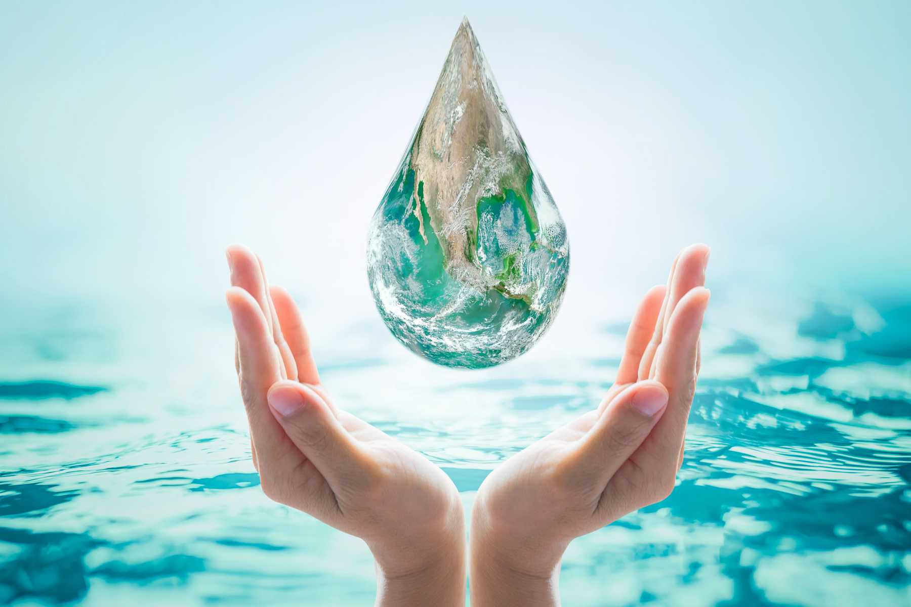
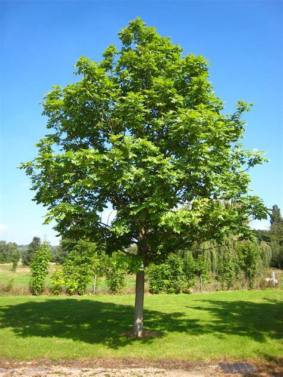

Lets, follow the first step of humanity that is to save the environment. Environment includes
the
basic necessities of life that are the water, air, land, pleasure-giving wind, the ultimate
abode of
animals forest, oxygen-giving trees. It gives us a lot of things but what we are giving? Harmful
gases are relaesed into the air and spreading air pollution, plastics and other
non-biodegradable,toxic substances are thrown on the land,water spreading land and water
pollution.
Drains and sewers are choke. But, Who did that's all? The answer is that we humans for the sake
of
our convenience did that's all. What would you think for those who made and lead these
industries?
Want to save the environment?
Different Ways To Conserve Environment:
Above 70% of our body contains water so it is pivotal for the human race to survive.Water helps in
regulating our body temperature.Water helps in the digestion of solid food. It also keeps our skin healthy
and hydrated. Water helps in excreting waste from our body through sweat, urination, and defecation. So
replenishing the water in our body is essential to prevent dehydration.Drinking water also helps in reducing
calories and maintaining body weight because it can increase the rate of metabolism.Water consumption
lubricates the joints, spinal cord, and tissues.Water plays an important role in most of the life processes
by acting as a solvent. The absorption of food in our body takes place in solution form with water as the
solvent. Also, many waste products are excreted in the form of solutions through urine and perspiration.
Water helps in regulating our body temperature. In hot weather, we drink a lot of water. This maintains our
body temperature. Also, water evaporates from the surface of our body as sweat. This takes away heat and
cools the body. Water is essential for plants to grow. Plants need water to prepare food. They also absorb
dissolved nutrients from the soil through their roots. Aquatic plants and animals use the nutrients and
oxygen dissolved in water for their survival.
Conservation of water
We can take many steps to conserve water on a national level as well as an individual level. Firstly, our
governments must implement efficient strategies to conserve water. The scientific community must work on
advanced agricultural reforms to save water.
Similarly, proper planning of cities and promotion of water conservation through advertisements must be
done. On an individual level, we can start by opting for buckets instead of showers or tubs.
Also, we must not use too much electricity. We must start planting more trees and plants. Rainwater
harvesting must be made compulsory so we can benefit from the rain as well.
Further, we can also save water by turning off the tap when we brush our teeth or wash our utensils. Use a
washing machine when it is fully loaded. Do not waste the water when you wash vegetables or fruit, instead,
use it to water plants.

Importance of Tree
When it is hot, human beings and animals look for an old tree that can give shade. There are several
trees
that people grow to give a good canopy for them to hold meetings and also have wonderful places to
relax.
Besides, people from various cultures choose to hold meetings under trees. And, trees also provide
building
materials for human shelter as well as their animals. Trees also decrease the rate of evaporation and
make
the ground a better place to stay.The canopies of trees serve as a physical filter, confining dust, and
absorbing pollutants from the air. They also provide shade from solar radiation and lessen noise.
Above 20 species of British trees and shrubs
are recognized to have medicinal properties. Research proves that within minutes of being enclosed by
trees
and green space, your blood pressure drops, your heart rate slows and your stress levels come down.Trees
absorb carbon dioxide while they grow and the carbon that they store in their wood aids reduces the rate
of
global warming.Trees decrease wind speeds and cool the air as they lose moisture. And it reflects heat
upwards from their leaves. Its considered that trees can lessen the temperature in a city by up to 7°C.
Trees also assist prevent flooding and soil erosion, etc.
For many years people used trees to use various ailments both in humans as well as their animals. Some
of
them are used for preparing solutions to drink. Others are rubbed on parts that are hurt. With time
people
applied to modern medicine, most of which is formed from different trees.
Now even with technology, most people still depend on holistic trees for medication. Trees treat most
ailments
Conservation Of Trees
Trees must not be cut down; in fact they must be kept intact wherever possible.
Larger green areas must be declared as reserves that must keep access remain closed for humans.
There is a trend to have more public spaces and parks and more trees planted to increase the greenery.
This must be encouraged.
Awareness about planting more trees and educating the masses about conservation of trees should be
promoted.
It is important to move towards using less paper and wood. Fewer trees will be cut down if less paper is
used. Recycling of paper can be encouraged.
Wherever trees are used for medicinal purposes, afforestation to replace the cut trees must be made
mandatory.
Every school must take up a tree plantation drive to teach the importance of trees at an early age.

Importance Of Air
We all need oxygen for respiration. The animals that live both on land and even the aquatic animals need
oxygen to exist otherwise they would all perish. Air is the fundamental building block, apart from which
life itself would not exist. Bubbles in water only occur due to the small concentration of air, that gets
trapped in the small bubbles.
If we take a lump of dry soil and add water to it, bubbles will be observed which indicates the presence of
air molecules. Water displaces the air present in the soil and hence bubbles are formed. The organisms
living in the soil respire through oxygen present in this air. Animals living in soil form holes and
burrows. These burrows make space for air molecules to move in. When it rains, water fills up the vacant
spaces and this is the reason why we see organisms like earthworms coming up the soil for air during the
rainy season.
We use oxygen all the time but it is still not exhausted because trees return this oxygen to the atmosphere
during the process of photosynthesis. Plants also consume oxygen but their consumption is very less than
compared to their production. Hence, the net effect is that they add oxygen to the atmosphere. Animals and
plants are interdependent on each other for their survival, plants produce oxygen and animals produce carbon
dioxide as a by the process, thus they exist with one other forming an ecosystem of their own. However, due
to man-made contributions to the environment and ecosystem such as deforestation and factories that release
smog, smoke, and other chemical components into the air, thereby polluting the air. This is called Air
Pollution.
Air has a lot of different uses that make it an important and essential necessity in our everyday life,
without air Earth would be just like the other lifeless planets in our solar system, without any plants,
animals or living beings. Without air; life itself would cease to exist. Without air, plants would be unable
to keep up with the process of photosynthesis and without them, animals who are completely dependent on
plants for their survival would perish too. Besides this, there would be no sound if air did not exist, and
we would be surrounded in a vacuum bubble. Apart from this, the pollination of crops would not happen and
thus, there would be no crops or food for us. Thus, air is the biggest essential factor that is necessary
for the survival of any living species.
Conservation Of Air
The conservation of air is the protection and cleaning of the earth's air supply. Air pollution can be
caused by any number of sources, including transportation, power plants, and factories. This pollution can
cause a number of health problems, so it is important to practice air conservation when possible. This can
be done by reducing emissions produced by personal as well as business, activities.
Environmental conservation is the protection of the earth's ecosystems and resources from pollution and
destruction and includes the rehabilitation of damaged ecosystems. There are different types of
environmental conservation, including water conservation and forest and animal conservation. Forest
conservationists work to prevent deforestation while animal conservationists try to protect wildlife from
destruction brought about by poaching, pollution, and habitat destruction.
The pollution of air can occur from any number of different sources. The fuel burned by cars and other modes
of transportation is a major source of air pollution. Manufacturing plants and power plants can also be
large sources of air pollution, but the amount of pollution may vary depending on the type of factory.
Those who participate in air conservation efforts are concerned about different types of air pollution. Too
many greenhouse gases in the air, including carbon dioxide and methane, have an effect on global warming.
Too much ozone can also be a problem because it can cause respiratory problems for some individuals. Other
dangerous chemicals, such as mercury, may escape into the air and cause acid rain. Large amounts of smog can
also be unsightly, and ruin the aesthetics of many city and natural landscapes.